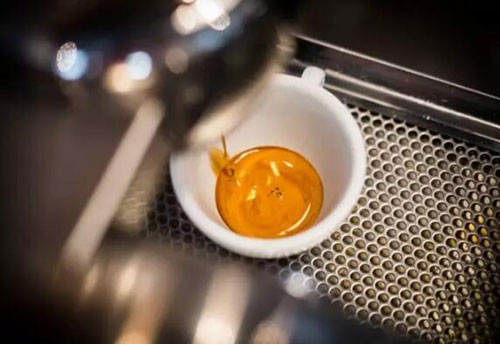

古代史在约在公元6世纪左右，衣索比亚有一 个叫做“喀法”的小村庄，村里 有一个叫做卡尔蒂（Coldi）的小牧羊 人。在一次放牧中 ，卡尔蒂发现他 的羊群很长时间都精力充沛，活蹦乱跳的 ，不肯回到羊圈中。于是他仔细观 察羊群，发现羊群是因为吃了一种从树上 掉下来的红色浆果，才变得如此精 神的。他将这种果实拿给修道院的牧师 们尝后，所有的人都觉得吃完后神 清气爽。后来，武士们也开始饮用这种 由红色果实煮出来的水，让自己在战 场上保持长时间的战斗能力和充沛的体力 |
近代史咖啡的存在形态本身就多种多样，在越发达的 国家地区越呈现多样性，也正是因为这种多样性， 才衍生出抗衡和博弈。 纵观咖啡的近代 史，大概就是咖啡大佬们和江湖人士的打斗史， 它体现在一系列的商业活动中。因为吃了斗争和革命. 说到底都是为自己争取地位，但革命的本质我要取代你。 打破结构，才是弱者能战胜强者的途径. 打破结构，他将这种果实拿给修道院的牧师 们尝后，所有的人都觉得吃完后神 在咖啡馆盛行的时候，它告诉你速溶咖啡可以 在任何地方冲；加咖啡伴侣加糖太麻烦，那么有三合一；加糖加 奶精不健康，也有速溶黑咖啡；流行现磨咖啡？ 密封性很好的胶囊咖啡也能有现磨的效果  |
现代史咖啡馆文化兴起之时正值启蒙和理性主义飙起。兴 趣和思想相近的人们在咖啡馆里自由交流和争论，提振精 神的 咖啡则可消除人的疲惫和懈怠，使人们保持 清醒和明晰的思想，为严密、冷静、务实的思考补充养料，有“脑量 增加”之功。咖啡馆 在科学研究和知识传 播中的作用是微妙且重要的，它促进了科学和学术社团的迅速发展。 比如英国皇家学会是在牛津的蒂利亚德咖啡 馆成立， 并成为当时最著名的科学团体。“英国的咖啡馆是一个严肃的场所，在那里， 拥有很高社会声誉和地位的人可以和所有类型的 人聚集在一起。这个具有包容性的社会交往环境反过来又促进了具有相 似兴趣的人组成的社团的形成，其中包括文学、商业 、科学或政 治社团。”可以说，英 国的启蒙运动是从咖啡馆中诞生和发展起来的。 |